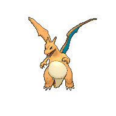

-
Bulbasaur #001
- Gress
- Poison
It lives in the Kanto region and belongs to Grass and Poison type Pokémon. There's a plant seed on its back from the day this Pokémon was born, by absorbing the sun's rays, the seed grows.
-
Ivysaur #002
- Gress
- Poison
He lives in the Kanto region and belongs to the herbal and poisonous type. There is a seed on the back of the Pokémon. This Pokémon has powerful legs and a strong torso to support its weight. Exposure to sunlight increases its strength. If he suddenly spends more time in the sun, this is a sign that the seed will soon grow into a large flower.
-
Venusaur #003

- Gress
- Poison
He lives in the Kanto region The Pokémon Seed has a large flower on its back. It is believed that the flower acquires a bright color if it receives a lot of nutrition and sunlight. A fascinating aroma exudes from its flower. The fragrance calms those engaged in battle. Your plant blooms when it is absorbing solar energy. It remains on the move to seek sunlight.
-
Charmander #004

- Fire
He lives in the Kanto region and belongs to the fire type. Since it is born, a flame burns at the tip of its tail. Your life would end if the flame went out. The flame burning at the tip of the Lizard Pokémon's tail indicates its emotions. The flame flickers when it's having fun. But if that Pokémon goes crazy, the flames will grow stronger. Preference for warm things. When it rains, steam is said to gush from the tip of its tail.
-
Charmeleon #005

- Fire
It lives in the Kanto region and belongs to the fire type. The Flame Pokémon holds onto enemies with its sharp claws. If he encounters a strong enemy, he becomes aggressive. In this excited state, the flame at the tip of its tail flickers blue-white. It has a barbaric nature. In battle, it whips its fiery tail and slashes with sharp claws.
-
Charizard #006
- Fire
It lives in the Kanto region and belongs to the fire and flying type of Pokémon. Flaming Pokémon fly through the sky in search of strong opponents. It spits intense flames that can melt anything. Its wings can carry this Pokémon up to an altitude of 4,600 feet.
-
Squirtle #007
- Water
It lives in the Kanto region and belongs to the Water-type Pokémon. The Turtle Pokémon's shell is used for more than just defense. The shell's rounded shape and accessories on its surface help minimize drag in the water, allowing this Pokémon to swim at high speeds. When it retracts its long neck into its shell, it squirts water with vigorous force. When it feels threatened, it pulls its limbs inside its carapace and sprays water from its mouth.
-
Wartortle #008
- Water
It lives in the Kanto region and belongs to the Water type Pokémon. The Turtle Pokémon's large tail is covered in thick fur. It is recognized as a symbol of longevity. If its shell has algae, that Wartortle is too old. It deftly controls its furry ears and tail to maintain balance while swimming.
-
Blastoise #009

- Water
It lives in the Kanto region and belongs to the Water-type Pokémon. It crushes its enemy under its heavy body to cause fainting spells. The rocket cannons on its projectile fire jets of water capable of piercing thick steel.
-
Caterpie #010

- Insect
He lives in the Kanto region and belongs to the Insect type. He has an insatiable appetite. It can devour leaves larger than its body right before your eyes. For protection, it releases a horrible stench from the antenna on its head to ward off enemies. Its short feet are pointed with suction cups that allow it to tirelessly climb slopes and walls.